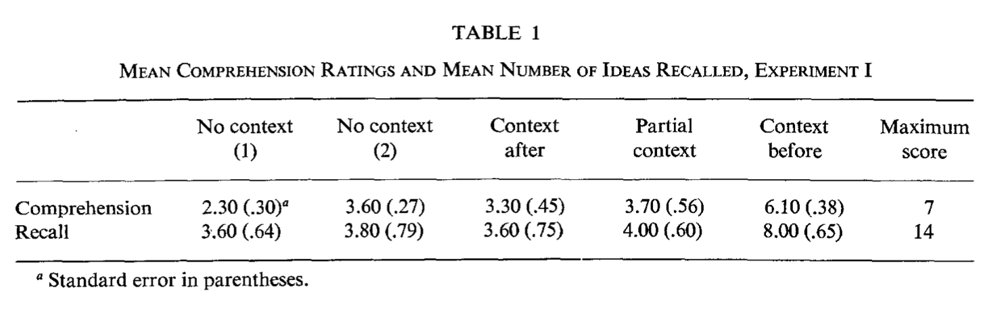
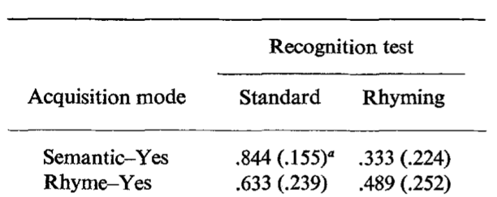

PSYC 2530: Memory II
Phenomena and principles
Matthew J. C. Crump
Last compiled 03/25/22
Reminders from last class
Reading is Chapter 9 on Memory II
Roadmap
1 Measuring Memory
2 Memory Phenomena
3 Memory Principles
Measuring Memory
Memory processes and abilities are measured with memory tasks
- Memory tasks are imperfect
- Need to critically evaluate how performance in a task relates to hypothesized memory processes
Recall vs recognition
Recall Task
Encoding phase:
- view a list of items (usually words)
Recall phase:
- generate as many items from the list as possible
- e.g., write down as many words as you can remember
Recognition Task
Encoding phase:
- view a list of items (usually words)
Recognition phase:
- view one item at a time, judge whether the item is OLD (shown before) or NEW (not shown before)
Example Memory Task
Let’s do a quick demo
We will do a memory test for words
Before we start make sure you have a way to write down answers
Encoding Phase
I am about to read 15 words, one at a time
Try to remember each word as best as you can
Listen to each word
Recall test
Spend 1 minute and write down as many individual words as you can remember
I will show you the list of words at the end and you can count how many you correctly recalled
Recognition task
In a recognition test participants see a stimulus and judge whether the stimulus is OLD or NEW?
Is this word OLD or NEW?
snooze
Is this word OLD or NEW?
piano
Is this word OLD or NEW?
sleep
Recall task performance
The list of words:
bed rest awake tired dream wake snooze blanket doze slumber snore nap peace yawn drowsy
- How many words did you recall correctly?
- Did you write down any words that were not on the list?
- Does failing to recall an item mean you don’t have a memory for it?
Recognition task performance
How did you do on the recognition task?
- Performance can depend on how easy the NEW items are.
- People can get 100% correct on all OLD items, just by saying OLD every time…
Memory Phenomena
In the next section we are going to explore laboratory memory phenomena
These are experimental manipulations that influence memory performance
Example 1: False-memory
Did you recall or recognize this word?
sleep
If you did, then you just had a false-memory.
- sleep was not on the list!
- The words in the list were manipulated to cause this effect
- scroll down for citation
DRM paper
Roediger, H. L., & McDermott, K. B. (1995). Creating false memories: Remembering words not presented in lists. Journal of experimental psychology: Learning, Memory, and Cognition, 21(4), 803.
Roadmap
1 Measuring Memory
2 Memory Phenomena
3 Memory Principles
Many Memory Phenomena
The textbook reviews several memory phenomena
We review them here
Memory Phenomena definition
Really general definition:
Anything to do with human and animal memory
Laboratory definition:
Changes in memory measurements resulting from experimental manipulations
Picture Superiority effect
Is your memory better for pictures than other things?
- Gehring, R. E., Toglia, M. P., & Kimble, G. A. (1976). Recognition memory for words and pictures at short and long retention intervals. Memory & Cognition, 4(3), 256–260. https://doi.org/bmxw8f
- navigate down for next slide
Picture Superiority effect


Frequency effects
What do you remember better?
- More frequent things?
- Less frequent things?


Presentation Rate and Spacing
How does study time influence word memory?
What about spacing out your practice?
- Melton, A. W. (1970). The situation with respect to the spacing of repetitions and memory. Journal of Verbal Learning and Verbal Behavior, 9(5), 596–606. https://doi.org/cpd74k
Presentation Rate and Spacing
Words were presented for 1.3, 2.3, and 4.3 seconds.
Repetitions of the same word were separated, or spaced out, by 0, 2, 4, 8, 20, or 40 intervening words.

Pro-active interference (PI)
Proactive interference happens when prior learning activities interfere with current learning activities.
- The more lists of words you already learned…
- The harder it gets to learn new lists of words
PI example from Underwood
Underwood, B. J. (1957). Interference and forgetting. Psychological Review, 64(1), 49–60. https://doi.org/c3vqj9

Retroactive interference (RI)
Retroactive interference happens when new learning activities interfere memory for past learning activities.
RI example
- Phase 1: learn 24 nonsense syllables and do memory test
- Phase 2, Exp: learn 24 new nonsense syllables
- Phase 2, Control: read magazine
- phase 3: final memory test for first list

Fan effect
Some words co-occur more or less with other words…
The number of associates a word has is called its fan
Fan effect: The time to recognize an item increases as its fan, or number of associates, increases
Fan effect example


Meaningfulness
Making information meaningful can make it more memorable
Self-reference effect
The self-reference effect shows that relating information to yourself can help you remember it better.
- Rogers, T. B., Kuiper, N. A., & Kirker, W. S. (1977). Self-reference and the encoding of personal information. Journal of Personality and Social Psychology, 35(9), 677. https://doi.org/cfzwx7
Self-reference effect example


Meaningful Context
How well do you think you can understand and remember this paragaph?
If the balloons popped, the sound wouldn’t be able to carry since everything would be too far away from the correct floor. A closed window would also prevent the sound from carrying, since most buildings tend to be well insulated. Since the whole operation depends on a steady flow of electricity, a break in the middle of the wire would also cause problems. Of course, the fellow could shout, but the human voice is not loud enough to carry that far. An additional problem is that a string could break the instrument. Then there could be no accompaniment to the message. It is clear that the best situation would involve less distance. Then there would be fewer potential problems. With face to face contact, the lest number of things could go wrong.
Bransford and Johnson
Participants read the previous paragraph under different conditions:
Full context

Partial context

Results
Participants who got the full context picture BEFORE they read the paragraph, showed much higher comprehension and recall

Environmental Context Effects
How does your environment influence your memory?
- Godden, D. R., & Baddeley, A. D. (1975). Context-dependent memory in two natural environments: On land and underwater. British Journal of Psychology, 66(3), 325–331. https://doi.org/10.1111/j.2044-8295.1975.tb01468.x
Design
Divers encoded words either on land or under water
Then they attempted to recall words in the same or different context from where they encoded the words
Results

Testing Effect
Does quizzing yourself help you remember things?
- Roediger III, H. L., & Karpicke, J. D. (2006). Test-enhanced learning: Taking memory tests improves long-term retention. Psychological Science, 17(3), 249–255. https://doi.org/10/cp47ms
- There will be some midterm questions about this paper
- It is available to read on blackboard
What is the testing effect?
Better memory for material that was tested and successfully recalled or recognized, compared to material that was not tested
- E.g., better later memory for a concept if it was on a quiz, compared to concepts that were not quizzed
Prior research
Testing effects have usually been obtained for word lists, picture lists, or multiple-choice questions
Questions
- Does the testing effect generalize to more educationally relevant conditions?
- Can the testing effect be obtained using prose materials and free-recall tests without feedback?
- Will benefits extend beyond restudying the material?
Experiment 1
Question:
- Will the testing effect occur for prose materials and free-recall tests without feedback?
Method
- 120 participants studied two prose passages on “the sun” or “sea otters)
- Passages were 256 and 275 words in length
- Each passage was divided into 30 idea units for later scoring
Design
- 2 x 3 mixed-factorial design
- Learning condition: restudy vs. test
- Delay to memory test: 5 min, 2 days, 1 week
Procedure
Phase 1: Participants studied a passage for the first time
- Then they either restudied the passage OR were given a recall test to remember as much of the material as they could
FINAL TEST: All participants were given a final recall test after a 5 minute, 2 day, or 1 week delay
Results

Experiment 2
What are the effects of repeated restudying vs re-testing on memory for the passages?
Method
“A 3 x 2 between-subjects design was used. Subjects learned one of the two prose passages under one of three conditions (S 5 study, T 5 test): repeated study (SSSS), single test (SSST), or repeated test (STTT). Ninety subjects were given a final recall test following a 5-min retention interval, and 90 took a final test after 1 week. Thirty subjects were assigned to each of the six between-subjects conditions.” (Roediger & Karpicke, 2006)
Results

Roadmap
1 Measuring Memory
2 Memory Phenomena
3 Memory Principles
Memory Principles
The following are general principles about memory performance
These are not strong principles in the sense that they always describe how memory works
But, memory performance often generally follows these principles
Levels of Processing Principle
Principle: The strength, quality, and depth of encoding will determine later memory performance
- Craik, F. I., & Lockhart, R. S. (1972). Levels of processing: A framework for memory research. Journal of Verbal Learning and Verbal Behavior, 11(6), 671–684. https://doi.org/10/cpcxr6
Shallow versus deep encoding
Shallow encoding
Brief amount of time
“low-level” processing
Less overall processing of stimulus
Result = Weak memory trace
Deep encoding
More time encoding
More meaningful processing
More overall processing
Result = Strong memory trace
Example
Cue-dependent memory
Principle: Context matters for encoding and retrieval
Cues in the environment can trigger memory retrieval for information previously paired/associated with the cue
Encoding Specificity Principle
“In its broadest form the [encoding specificity] principle asserts that only that can be retrieved that has been stored, and that how it can be retrieved depends on how it was stored. In its more restricted senses, the principle becomes less truistic and hence theoretically more interesting. For instance, we assume that what is stored about the occurrence of a word in an experimental list is information about the specific encoding of that word in that context in that situation. This information may or may not include the relation that the target word has with some other word…If it does, that other word may be an effective retrieval cue. If it does not, the other word cannot provide access to the stored information because its relation to the target word is not stored.”
Tulving, E., & Thomson, D. M. (1973). Encoding specificity and retrieval processes in episodic memory. Psychological Review, 80(5), 352. https://doi.org/10/cgj2rr
In other words
The encoding specificity principle says the details of how information was encoded in the first place matters for later memory retrieval.
If some target information was encoded in relation to its context, then contextual cues may be useful for retrieval later on.
However, if the operations that occurred during encoding did not focus much on contextual information, then contextual cues may not be very useful as retrieval cues later on.
TIP/TAP
TIP: Transfer inappropriate processing
TAP: Transfer appropriate processing
How a person makes use of prior information encoded by memory depends on how the information was encoded in interaction with the demands of present task.
Qualifying the previous principles
The TIP/TAP principle further qualifies the preceding principles.
- Memory depends on how deeply you encode information (levels of processing), the context around the encoding episode (context-dependent memory), and how the information is encoded (encoding-specificity principle)
- BUT, memory performance will also depend on the nature of the processing required by the retrieval task.
Matching vs mismatching processing
According to TIP/TAP, previous information becomes more available when retrieval processing conditions match well with encoding processing conditions, and becomes less available when the conditions mismatch.
- Encoding and retrieval demands Match = better memory
- Encoding and retrieval demands mismatch = worse memory
Morris, Bransford and Franks
Demonstrated that the tasks performed at encoding and retrieval can influence memory performance.
- Morris, C. D., Bransford, J. D., & Franks, J. J. (1977). Levels of processing versus transfer appropriate processing. Journal of verbal learning and verbal behavior, 16(5), 519-533.
Encoding Phase
Subjects encoded words in two conditions:
- semantically (in a sentence) to encourage deep processing, or
- rhyming condition to encourage more shallow phonetic processing.
Retrieval Phase
Two kinds of recognition tests: standard vs rhyming
- Purpose was to change the processing demands during retrieval to match or mismatch with encoding task
Standard
Hear a word a judge OLD vs NEW
Rhyming
Hear a cue word (not shown during encoding)
Judge whether they heard a rhyming word during encoding
Consider?
What would the levels of processing principle predict for memory performance in this experiment?
The results
Standard: better memory for semantic encoding than rhyming encoding
Rhyming test: better memory for rhyming encoding than semantic encoding

What’s next
Take the quiz and complete any additional assignments
Next week we begin discussing implicit influences in cognition.